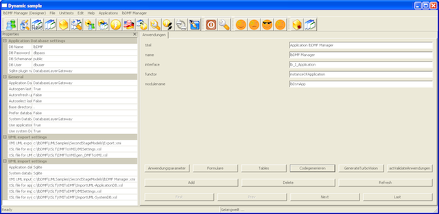
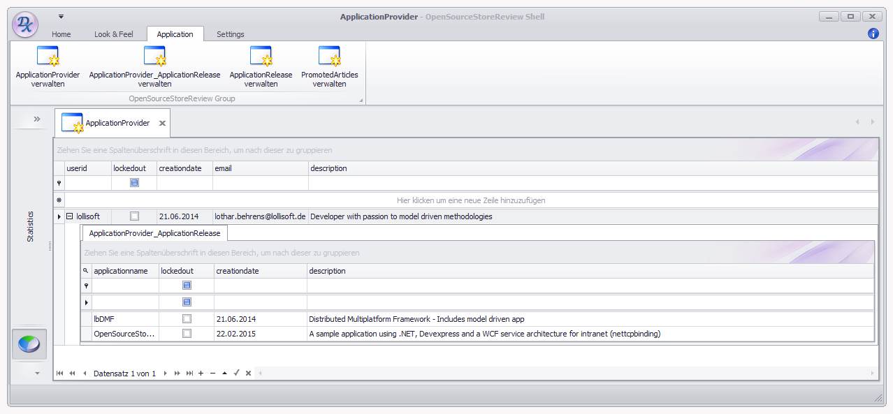
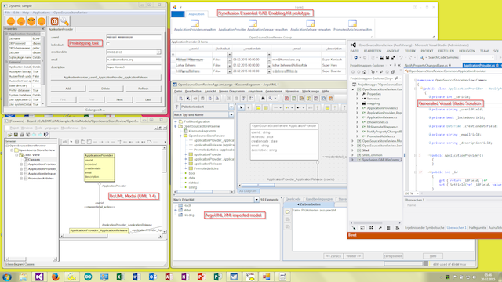
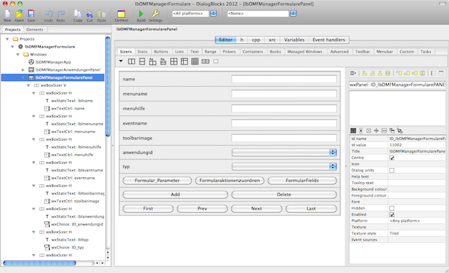

Distributed Multiplatform Framework

Open Source als Möglichkeit für kostengünstige Software. Ja Sie lesen richtig! Diese Software gibt es kostenlos. Sie stehen als Nutzer aber nicht im Regen, wenn es einmal nicht weiter geht. Schauen Sie meine Liste der Dienstleistungen an und überzeugen sich vom Support.
Dieses Projekt ermöglicht Ihnen, viel Zeit bei der Erstellung einer ersten Software Version zu sparen. Sie erstellen ein Modell, welches durch das Programm interpretiert wird. Ein Modell entspricht in der ersten Ausprägung einem Tabellenschema, womit es ein leichtes ist ein solches Modell zu erstellen. Wenn das Modell importiert ist, können Sie schon eine erste lauffähige Anwendung bestaunen, Testdaten eingeben und diese später sogar in die reale Anwendung übernehmen. (Vorausgesetzt, sie überschreiben bei einem weiteren Import nicht die Datenbank...)
In der dargestellten Anwendung sehen Sie ein geladenes Modell, welches in diesem Fall das Modell der Anwendung selbst ist. In der Tat ist der Prototyper selbst ein Prototyp. Innerhalb dieser Anwendung haben Sie die Möglichkeit, das Modell weiter zu bearbeiten. Bspw. ist es praktisch, hier eine Konfiguration für die Datenbank anzugeben. Es stehen des weiteren die übliche Navigation bereit, wie Anfang/Vor/Zurück/Ende. Eine Navigation in die Detailformulare ist möglich, sofern Sie dies modellieren.
Mehr: Distributed Multiplatform Framework
CAB DevExpress Codegenerator Compilation

Haben Sie ein Modell erstellt und entspricht es nach Ihnren Vorstellungen dem, was das Programm später machen soll, können Sie hiermit eine erste Prototyp Variante erstellen, die auch schön aussieht. Verwendet wird ein kommerzielles Framework (DevExpress) und eine freie Implementierung eines Komposite Frameworks, welches eine modulare Anwendung als Ziel anstrebt und demnach erweiterbar ist.
Sie sehen eine ansprechende Anwendung im Menuband Design, welches durch das Modell beeinflussbar ist. Weiter haben Sie die Möglichkeit Reports zu erstellen. Ein eingebauter Report Designer hilft ihnen auf einfache Weise Ihre Reports zu gestalten.
Im Übrigen ist die dargestellte Anwendung jene aus der oben dargestellten Version. Somit haben Sie auch die Gelegenheit, Ihr Design in einem Report zu dokumentieren, nach PDF und weitere Formate zu exportieren.
Die tabellarische Darstellung bietet die Möglichkeit Details aufzuklappen, Spalten zu sortieren, Filter zu setzen sowie Spalten zu verstecken. Eine Formularansicht bietet Ihnen Endbenutzer-Design an, welches das Anpassen von dem Layout erlaubt. Dieses Layout wird auf dem Rechner unter dem Benutzeraccount gespeichert.
In der aktuellen Version wird für die Anwendung ebenso ein Service erstellt, welcher technisch gesehen eine Trennung von der Anwendung darstellt und auf einem Server im Internet installiert werden kann. Es ist ein Windows Dienst welcher mittels Ferderated Authentication abgesichert ist, was Ihnen ein lästiges Anmelden an verschiedenen Services erspart/vereinfacht. Dieser Federated Authentication Service und dessen Management Software steht ebenfalls als Modell zur Verfügung und kann entsprechend als Anwendung generiert werden.
Mehr: CAB DevExpress Codegenerator Compilation
OpenSourceStoreReviewApp sample application

Schauen Sie sich einfach mal eine Beispielanwendung an. Diese Anwendung ist ein erstes Design für eine Open Source Projekt Review Funktion. Erstellen Sie Ihre Hersteller, Releases und Reviews. Erzeugen Sie Reports, die Sie in eine Pdf Datei exportieren können.
Diese Anwendung speichert Daten auf einem Server im Internet. Bitte beachten Sie, dass diese Daten für jeden Account sichtbar und editierbar sind, der für diese Anwendung erzeugt wurde!
Mehr: OpenSourceStoreReviewApp sample application
CAB Syncfusion Codegenerator Compilation

Ein weiteres Template ist ab sofort zu haben: Erstellen Sie Anwendungen für Syncfusion Essential Studio.
Diese Anwendung speichert Daten in einer lokalen Sqlite Datenbank und verwendet dabei NHibernate. Die generierte Anwendung ist auf einem 64Bit System lauffähig und zeigt die gleichen Daten wie wxWrapper von Distributed Multiplatform Framework an, wenn lbDMF Manager generiert wird.
Bei einer 32Bit Umgebung verwenden Sie bitte die entsprechende 32Bit Sqlite DLL.
Mehr: CAB Syncfusion Codegenerator Compilation
lbDMF wxWidgets Dialog Blocks Codegenerator Compilation

Ein weiteres Template ist ab sofort zu haben: Erstellen Sie Multiplattform Anwendungen.
Dieses Template verwendet wxWidgets und Dialog Blocks zusammen um Datenbankanwendungen zu generieren. Die generierte Anwendung kann in der Folge mit dem Designer Dialog Blocks nachbearbeitet werden.
Bitte beachten Sie, dass dies eine Vorabversion ist, welche kompilierbar ist, aber noch keinen lauffähigen Code erzeugt.
More: lbDMF wxWidgets Dialog Blocks Codegenerator Compilation